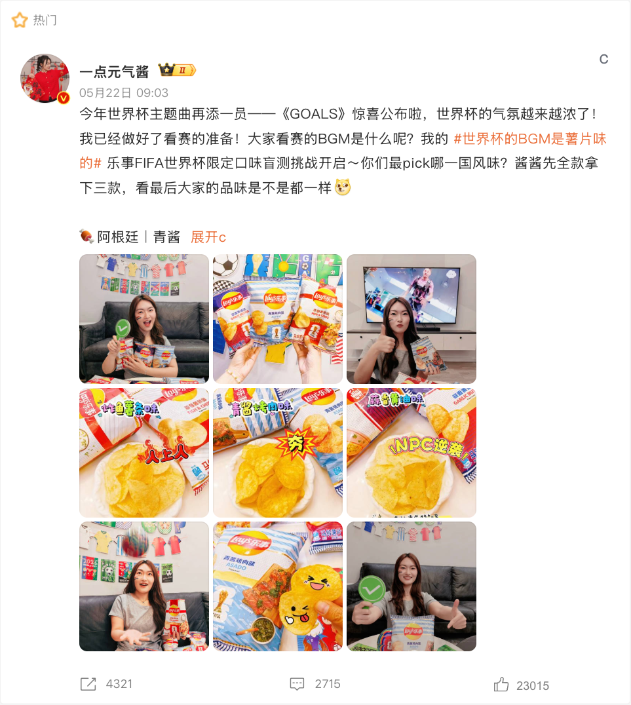

案例发生了什么


乐事把球队归属和国家风味做进包装，让零食货架成为球迷表达支持对象的低门槛入口。
案例启示
案例启示
关键动作
- 以国家/球队元素赋予常规商品款式限定感。
- 在货架上缩短“看到赛事”与“买一包参与”的距离。
- 让包装成为可以被拍照和讨论的内容。
传播与商业机制
传播路径
以“FIFA 赞助 / 零售”为资源起点，进入官方赛事资产、品牌内容、产品/服务、零售或会员触点，让赛事权益转化为用户可接触、可讨论或可参与的内容。
商业承接
不把曝光直接等同销售，重点观察权益可见度、用户参与、产品/服务使用与商业转化的分层变化，并区分品牌自报、平台数据与可独立核验结果。
可复用的方法快消品的赛事营销不必发明新消费场景，关键是给原有购物动作一个此刻才成立的理由。
适用条件、风险与证据
- 需要明确权益能被调用的范围，而不是只记录赞助级别。
- 至少准备内容与商业两条承接线，防止资源只在比赛画面里出现。
- 复盘时区分赛事可见度、用户参与和实际业务结果，不能相互替代。
核验记录可将已核动作作为内部判断基础；涉及投放规模、销售结果或合作细则时，仍应以品牌、平台或权利方的一手发布为准。 当前记录：已核；素材状态：有图。
资料与来源
资料状态与补证方向
当前资料基础
将全球赛事权益翻译为产品、体验与市场增长。 页面已记录参与路径、动作机制、证据状态与素材状态。
优先补证
已归档素材状态为“有图”，下一步应继续补发布日期、投放场景和可归因效果。
结果口径
尚未归档可独立验证的效果数据时，不以曝光推断销售，也不把平台整体数据归因到单一品牌。